Draws a line plot showing the change of a numeric value across the progression of a categorical x-axis variable. Each x-axis category is rendered as a point connected by a line, with support for multiple grouped series, error bars, highlighted points, background stripes, and a horizontal reference line.
Key features:
Colour modes: lines and points can be coloured by x category (single-series) or by a
group_byvariable (multi-series), or use a single uniform colour.Error bars: additive error bars via
errorbar_sd,errorbar_min, orerrorbar_max.Highlighting: specific points can be emphasised with a different colour and size via indices, row names, or a filter expression.
Background stripes:
add_bg = TRUEdraws alternating bands for visual grouping.Count aggregation: omit
yto plot observation counts per x category.
Usage
LinePlot(
data,
x,
y = NULL,
group_by = NULL,
group_by_sep = "_",
split_by = NULL,
split_by_sep = "_",
fill_point_by_x_if_no_group = TRUE,
color_line_by_x_if_no_group = TRUE,
add_bg = FALSE,
bg_palette = "stripe",
bg_palcolor = NULL,
bg_alpha = 0.2,
add_errorbars = FALSE,
errorbar_width = 0.1,
errorbar_alpha = 1,
errorbar_color = "grey30",
errorbar_linewidth = 0.75,
errorbar_min = NULL,
errorbar_max = NULL,
errorbar_sd = NULL,
highlight = NULL,
highlight_size = pt_size - 0.75,
highlight_color = "red2",
highlight_alpha = 0.8,
pt_alpha = 1,
pt_size = 5,
keep_na = FALSE,
keep_empty = FALSE,
line_type = "solid",
line_width = 1,
line_alpha = 0.8,
add_hline = FALSE,
hline_type = "solid",
hline_width = 0.5,
hline_color = "black",
hline_alpha = 1,
theme = "theme_this",
theme_args = list(),
palette = "Paired",
palcolor = NULL,
palreverse = FALSE,
x_text_angle = 0,
aspect.ratio = 1,
legend.position = "right",
legend.direction = "vertical",
facet_by = NULL,
facet_scales = "fixed",
combine = TRUE,
nrow = NULL,
ncol = NULL,
byrow = TRUE,
facet_nrow = NULL,
facet_ncol = NULL,
facet_byrow = TRUE,
facet_args = list(),
title = NULL,
subtitle = NULL,
xlab = NULL,
ylab = NULL,
seed = 8525,
axes = NULL,
axis_titles = axes,
guides = NULL,
design = NULL,
...
)Arguments
- data
A data frame.
- x
A character string specifying the column name of the data frame to plot for the x-axis.
- y
A character string specifying the column name of the data frame to plot for the y-axis.
- group_by
Columns to group the data for plotting For those plotting functions that do not support multiple groups, They will be concatenated into one column, using
group_by_sepas the separator- group_by_sep
The separator for multiple group_by columns. See
group_by- split_by
A character vector of column names to split the data by. Each split level produces a separate sub-plot. Multiple columns are concatenated with
split_by_sep.- split_by_sep
A character string used to join multiple
split_bycolumn values. Default"_".- fill_point_by_x_if_no_group
A logical value. When TRUE (default), points are filled by the x-axis categories via the palette when
group_by = NULL. Passed toLinePlotSingleasfill_point_by_x. Has no effect whengroup_byis set.- color_line_by_x_if_no_group
A logical value. When TRUE (default), lines are coloured by the x-axis categories via the palette when
group_by = NULL. Passed toLinePlotSingleascolor_line_by_x. Has no effect whengroup_byis set.- add_bg
A logical value. When TRUE, alternating background stripes are drawn via
bg_layer(). Default FALSE.- bg_palette
A character string specifying the palette for the background stripe colours. Default
"stripe".- bg_palcolor
A character vector of colours for the background stripes. When NULL (default), colours are derived from
bg_palette.- bg_alpha
A numeric value in
[0, 1]for the transparency of background stripes. Default 0.2.- add_errorbars
A logical value. When TRUE, error bars are added via
geom_errorbar(). Requireserrorbar_sdorerrorbar_min/errorbar_max. Default FALSE.- errorbar_width
A numeric value for the width of the error bar caps. Default 0.1.
- errorbar_alpha
A numeric value in
[0, 1]for the transparency of error bars. Default 1.- errorbar_color
A character string for the colour of the error bars. When
"line", error bars are coloured the same as the lines (by x whencolor_line_by_x = TRUE, or single colour otherwise). Default"grey30".- errorbar_linewidth
A numeric value for the line width of error bars. Default 0.75.
- errorbar_min
A character string naming the column with the lower error bar bound. Ignored when
errorbar_sdis provided.- errorbar_max
A character string naming the column with the upper error bar bound. Ignored when
errorbar_sdis provided.- errorbar_sd
A character string naming the column with the standard deviation. When
errorbar_minanderrorbar_maxare not provided, error bars are computed as y +/-errorbar_sd.- highlight
A vector of row indices, row names, a single string expression (e.g.
"y > 10") filtering rows to highlight, or TRUE to highlight all points. When NULL (default), no highlighting is applied.- highlight_size
A numeric value for the size of highlighted points. Defaults to
pt_size - 0.75.- highlight_color
A character string for the colour of highlighted points. Default
"red2".- highlight_alpha
A numeric value in
[0, 1]for the transparency of highlighted points. Default 0.8.- pt_alpha
A numeric value in
[0, 1]for the transparency of points. Default 1.- pt_size
A numeric value for the point size. Default 5.
- keep_na
A logical value or a character to replace the NA values in the data. It can also take a named list to specify different behavior for different columns. If TRUE or NA, NA values will be replaced with NA. If FALSE, NA values will be removed from the data before plotting. If a character string is provided, NA values will be replaced with the provided string. If a named vector/list is provided, the names should be the column names to apply the behavior to, and the values should be one of TRUE, FALSE, or a character string. Without a named vector/list, the behavior applies to categorical/character columns used on the plot, for example, the
x,group_by,fill_by, etc.- keep_empty
One of FALSE, TRUE and "level". It can also take a named list to specify different behavior for different columns. Without a named list, the behavior applies to the categorical/character columns used on the plot, for example, the
x,group_by,fill_by, etc.FALSE(default): Drop empty factor levels from the data before plotting.TRUE: Keep empty factor levels and show them as a separate category in the plot."level": Keep empty factor levels, but do not show them in the plot. But they will be assigned colors from the palette to maintain consistency across multiple plots. Alias:levels
- line_type
A character string specifying the line type. Default
"solid".- line_width
A numeric value for the line width (in mm). Default 1.
- line_alpha
A numeric value in
[0, 1]for the transparency of the line. Default 0.8.- add_hline
A numeric value specifying the y-intercept of a horizontal reference line. When FALSE (default), no line is drawn.
- hline_type
A character string specifying the line type of the horizontal reference line. Default
"solid".- hline_width
A numeric value for the width of the horizontal reference line. Default 0.5.
- hline_color
A character string for the colour of the horizontal reference line. Default
"black".- hline_alpha
A numeric value in
[0, 1]for the transparency of the horizontal reference line. Default 1.- theme
A character string or a theme class (i.e. ggplot2::theme_classic) specifying the theme to use. Default is "theme_this".
- theme_args
A list of arguments to pass to the theme function.
- palette
A character string specifying the palette to use. A named list or vector can be used to specify the palettes for different
split_byvalues.- palcolor
A character string specifying the color to use in the palette. A named list can be used to specify the colors for different
split_byvalues. If some values are missing, the values from the palette will be used (palcolor will be NULL for those values).- palreverse
A logical value indicating whether to reverse the palette. Default is FALSE.
- x_text_angle
A numeric value specifying the angle of the x-axis text.
- aspect.ratio
A numeric value specifying the aspect ratio of the plot.
- legend.position
A character string specifying the position of the legend. if
waiver(), for single groups, the legend will be "none", otherwise "right".- legend.direction
A character string specifying the direction of the legend.
- facet_by
A character string specifying the column name of the data frame to facet the plot. Otherwise, the data will be split by
split_byand generate multiple plots and combine them into one usingpatchwork::wrap_plots- facet_scales
Whether to scale the axes of facets. Default is "fixed" Other options are "free", "free_x", "free_y". See
ggplot2::facet_wrap- combine
Logical; when TRUE (default), per-split plots are combined into a single
patchworkobject. When FALSE, a named list ofggplotobjects is returned.- nrow, ncol
Integer number of rows / columns for the combined layout (passed to
wrap_plots).- byrow
Logical; fill the combined layout by row. Default TRUE (passed to
wrap_plots).- facet_nrow
A numeric value specifying the number of rows in the facet. When facet_by is a single column and facet_wrap is used.
- facet_ncol
A numeric value specifying the number of columns in the facet. When facet_by is a single column and facet_wrap is used.
- facet_byrow
A logical value indicating whether to fill the plots by row. Default is TRUE.
- facet_args
A list of additional arguments passed to
facet_plot()for fine-grained control over faceting (e.g.scales,space,labeller).- title
A character string specifying the title of the plot. A function can be used to generate the title based on the default title. This is useful when split_by is used and the title needs to be dynamic.
- subtitle
A character string specifying the subtitle of the plot.
- xlab
A character string specifying the x-axis label.
- ylab
A character string specifying the y-axis label.
- seed
A numeric seed for reproducibility. Passed to
validate_common_args(). Default 8525.- axes
A character string specifying how axes should be treated across the combined layout (passed to
wrap_plots).- axis_titles
A character string specifying how axis titles should be treated across the combined layout. Defaults to
axes.- guides
A character string specifying how guides should be collected across panels. Passed to
combine_plots().- design
A custom layout specification for combined plots (passed to
combine_plots()). Overridesnrow/ncolwhen specified.- ...
Additional arguments.
Value
A ggplot object, a patchwork object (when
combine = TRUE with split_by), or a named list of
ggplot objects (when combine = FALSE), each with
height and width attributes in inches.
split_by Workflow
When split_by is provided:
Column validation –
check_columns()resolvessplit_bywith multi-column concatenation.NA / empty pre-processing –
process_keep_na_empty()handleskeep_na/keep_emptyfor the split column before splitting, then removes the split column from the per-split lists.Data splitting – splits
databysplit_bylevels, preserving factor level order. Whensplit_by = NULL, the data is wrapped in a single-element list with name"...".Per-split palette / colour –
check_palette()andcheck_palcolor()resolve per-split palette and colour overrides.Per-split legend –
check_legend()resolveslegend.positionandlegend.directionper split level.Per-split title – when
titleis a function, it receives the default title (the split level name) and can return a custom string; otherwisetitle %||% split_levelis used.Dispatch – each split subset is passed to
LinePlotAtomic.Combination –
combine_plots()assembles the list of plots viapatchwork::wrap_plots, honouringnrow/ncol/byrow/design.
Examples
# \donttest{
data <- data.frame(
x = factor(c("A", "B", "C", "D", "A", "B", "C", "D"), levels = LETTERS[1:6]),
y = c(10, 8, 16, 4, 6, 12, 14, 2),
group = c("G1", "G1", "G1", "G1", "G2", "G2", "G2", "G2"),
facet = c("F1", "F1", "F2", "F2", "F3", "F3", "F4", "F4")
)
# --- Basic usage ---
LinePlot(data, x = "x", y = "y")
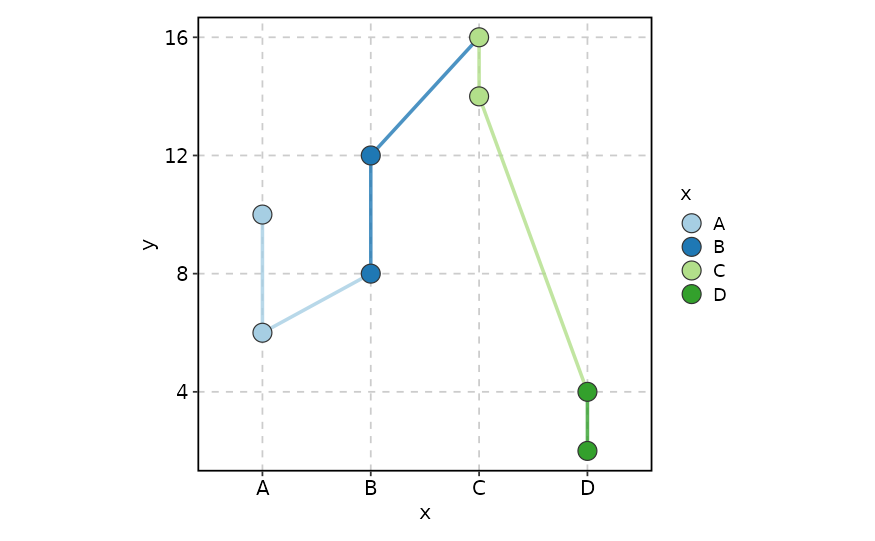
LinePlot(data, x = "x", y = "y", highlight = "group == 'G1'",
fill_point_by_x_if_no_group = FALSE, color_line_by_x_if_no_group = FALSE)
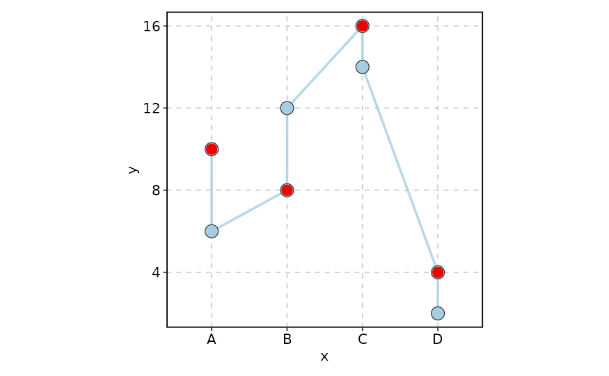
# --- Grouped lines ---
LinePlot(data, x = "x", y = "y", group_by = "group")
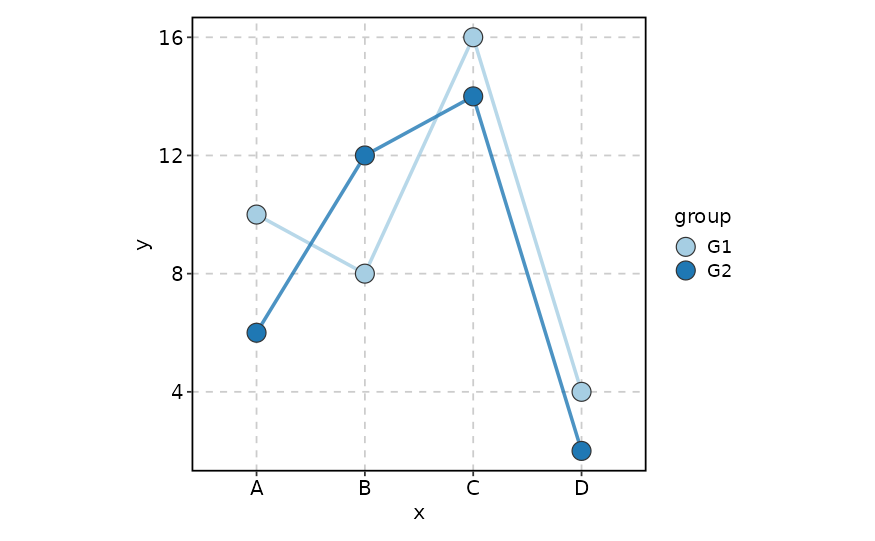
LinePlot(data, x = "x", y = "y", group_by = "group",
add_hline = 10, hline_color = "red")
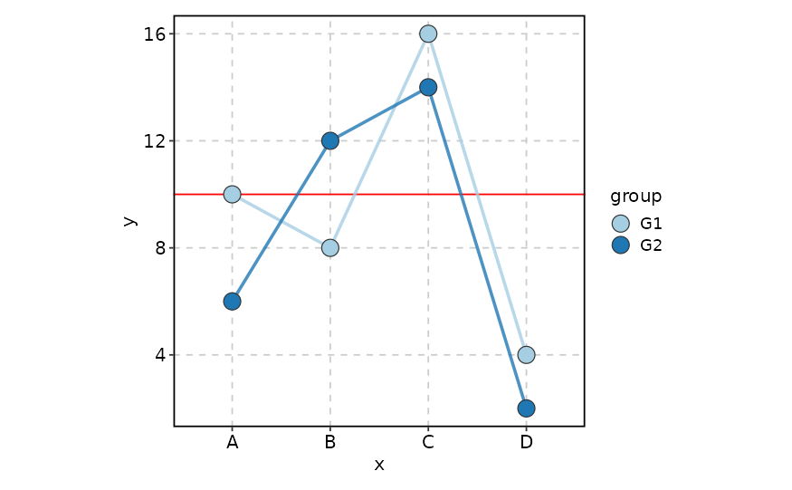
LinePlot(data, x = "x", y = "y", group_by = "group", add_bg = TRUE,
highlight = "y > 10")
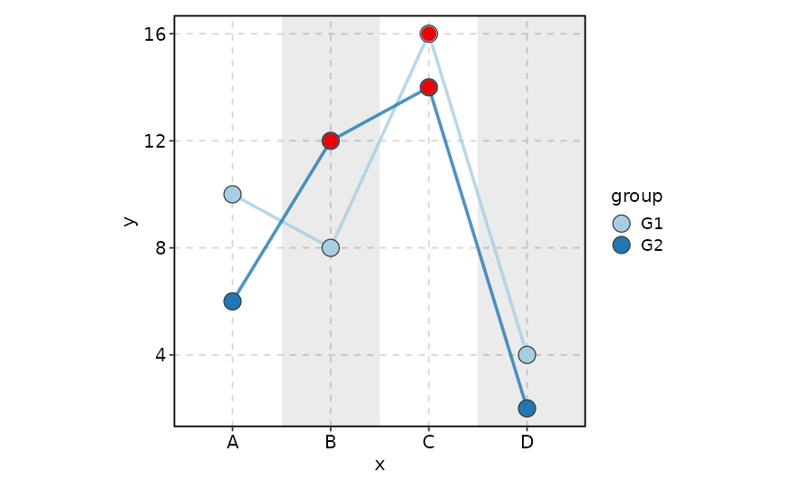
LinePlot(data, x = "x", y = "y", group_by = "group", facet_by = "facet")
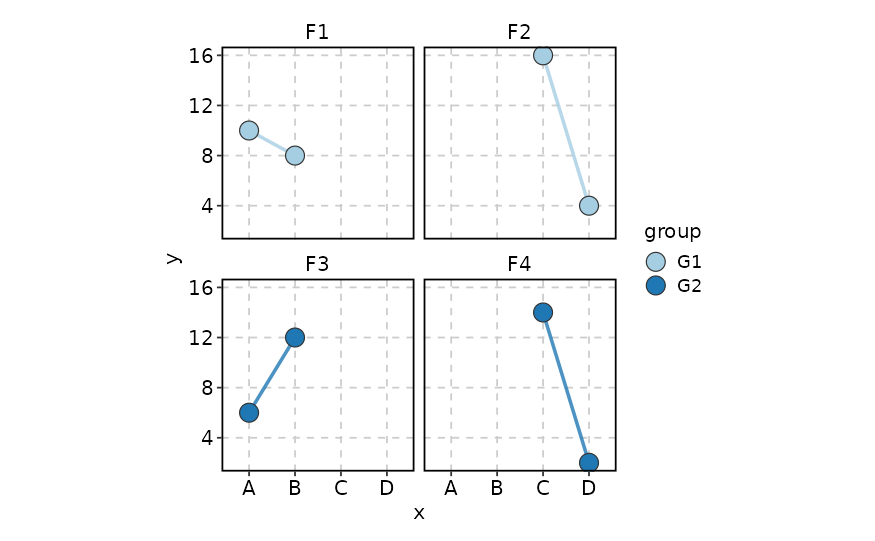
LinePlot(data, x = "x", y = "y", group_by = "group", split_by = "facet")
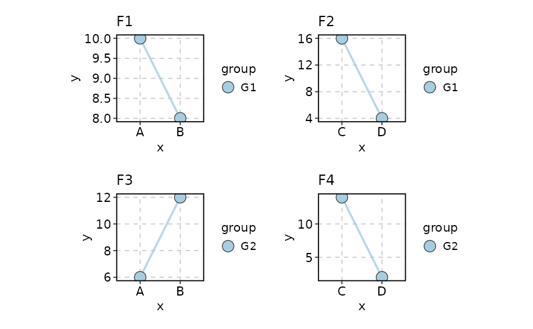
# --- Per-split styling ---
LinePlot(data, x = "x", y = "y", split_by = "group",
palcolor = list(G1 = c("red", "blue"), G2 = c("green", "black")))
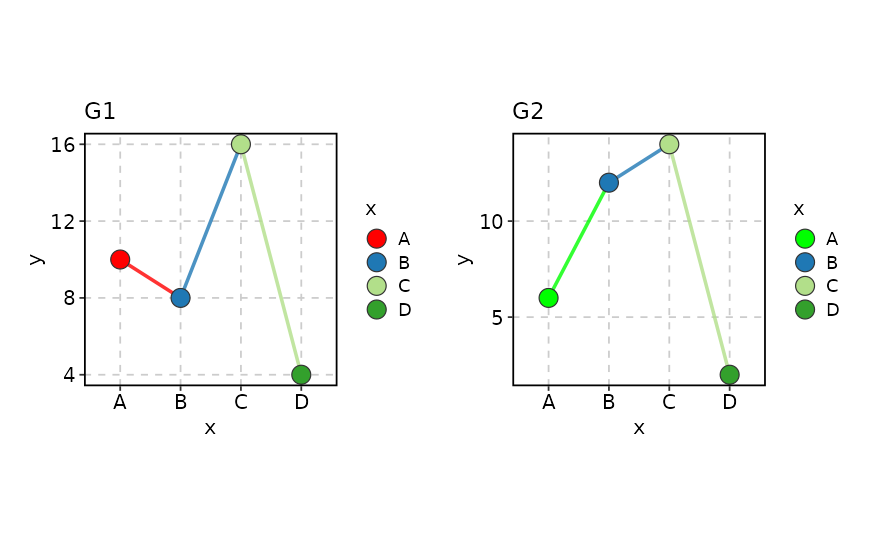
# --- keep_na and keep_empty ---
data <- data.frame(
x = factor(c("A", "B", NA, "D", "A", "B", NA, "D"), levels = LETTERS[1:4]),
y = c(10, 8, 16, 4, 6, 12, 14, 2),
group = factor(c("G1", "G1", "G1", NA, NA, "G3", "G3", "G3"),
levels = c("G1", "G2", "G3")),
facet = c("F1", "F1", "F2", "F2", "F3", "F3", "F4", "F4")
)
LinePlot(data, x = "x", y = "y", keep_na = TRUE)
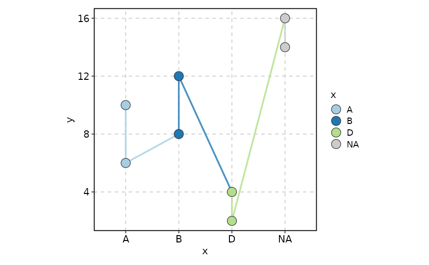
LinePlot(data, x = "x", y = "y", keep_empty = TRUE)
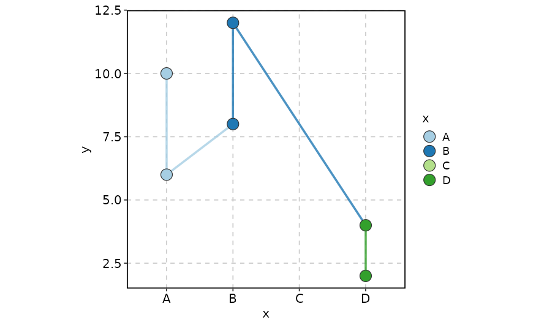
LinePlot(data, x = "x", y = "y", keep_empty = 'level')
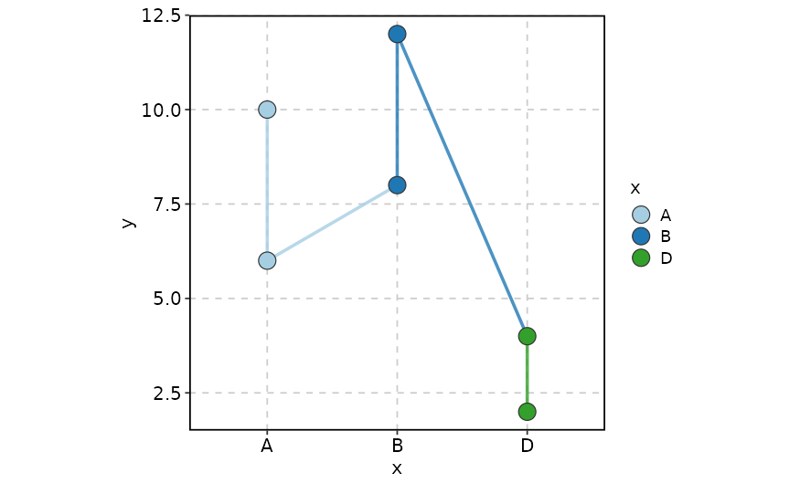
LinePlot(data, x = "x", y = "y", group_by = "group", keep_na = TRUE)
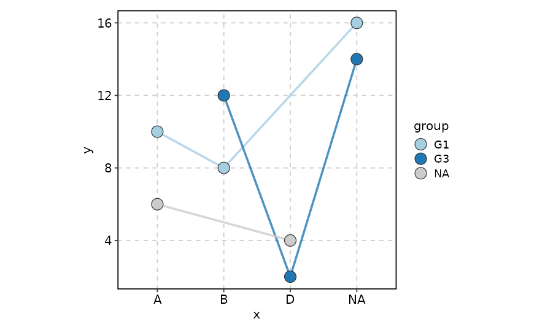
LinePlot(data, x = "x", y = "y", group_by = "group", keep_empty = TRUE)
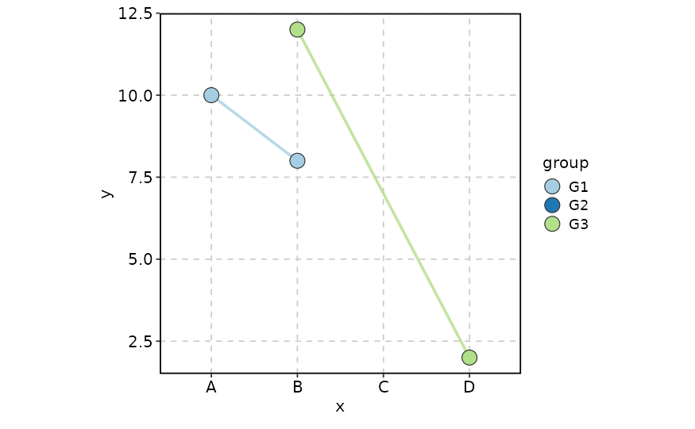
LinePlot(data, x = "x", y = "y", group_by = "group",
keep_empty = list(x = TRUE, group = 'level'))
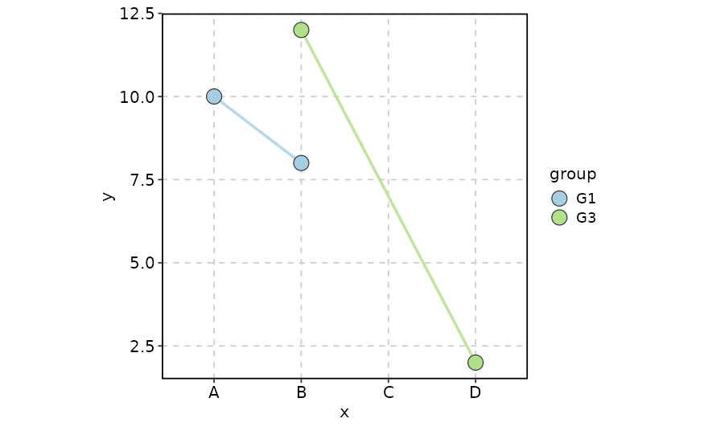
# }